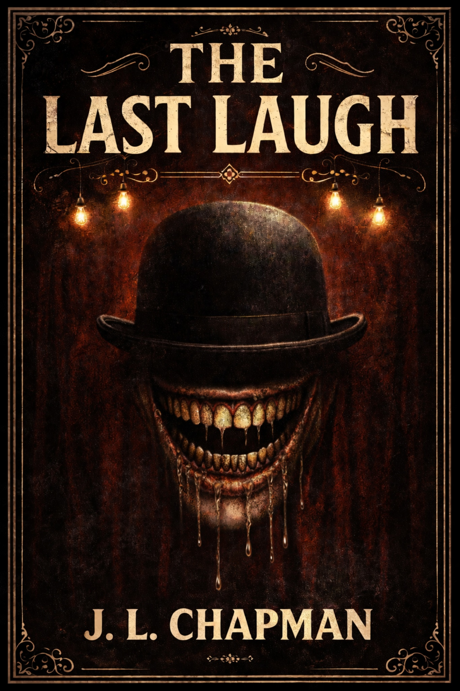
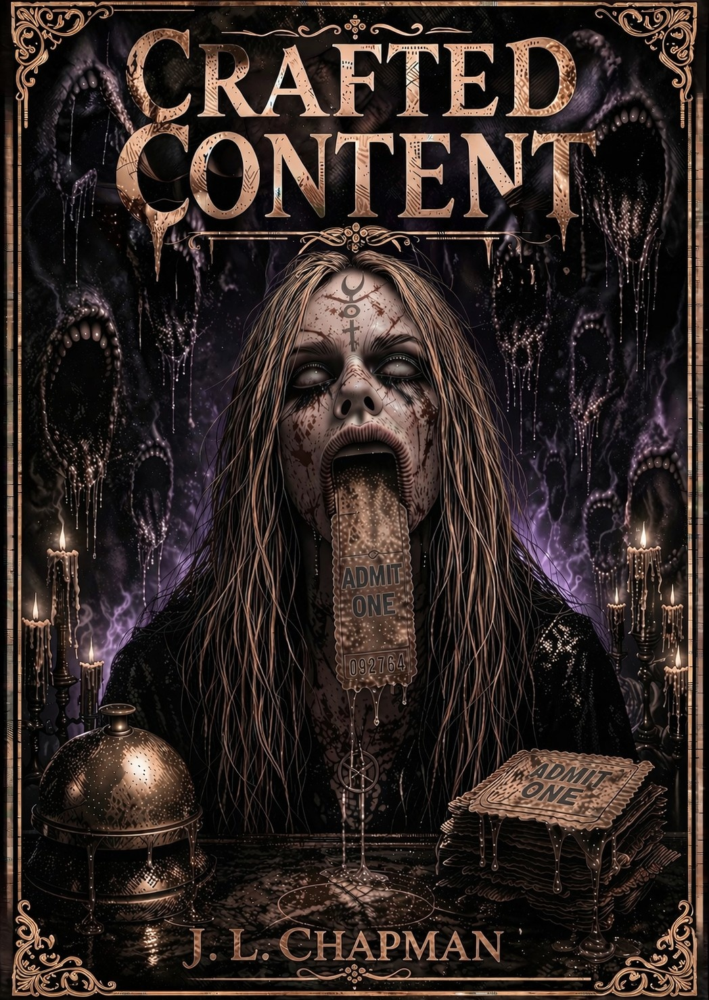
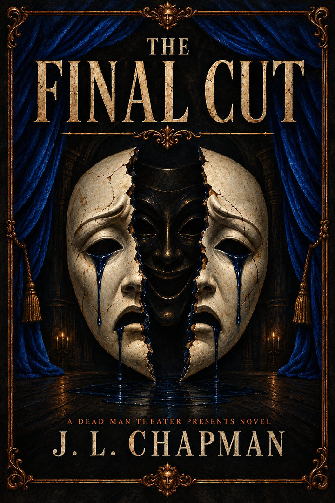
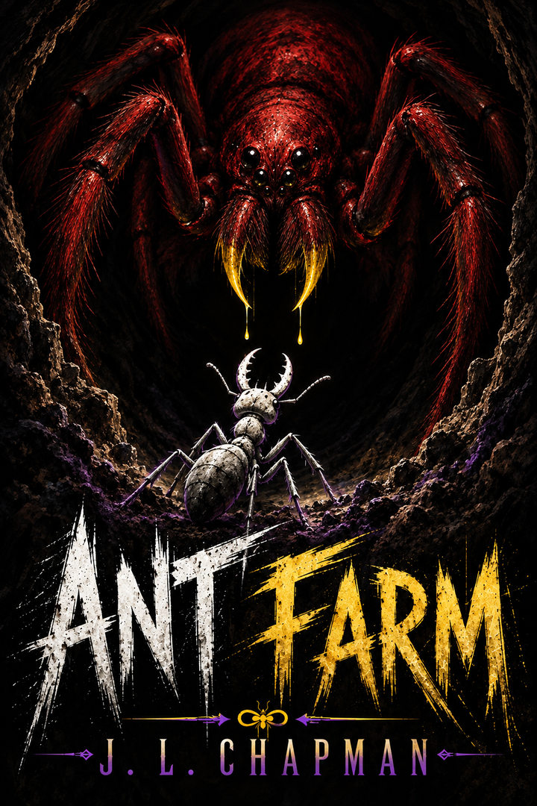
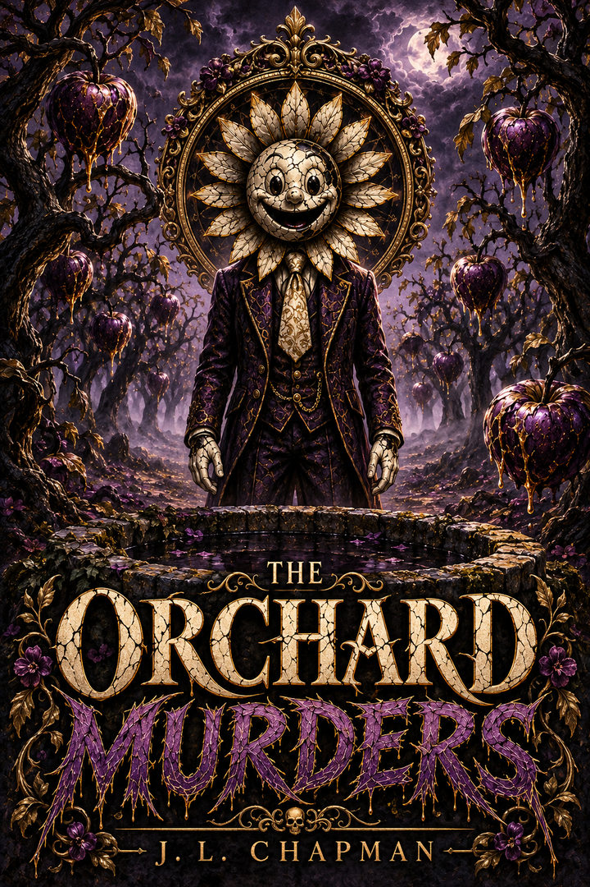
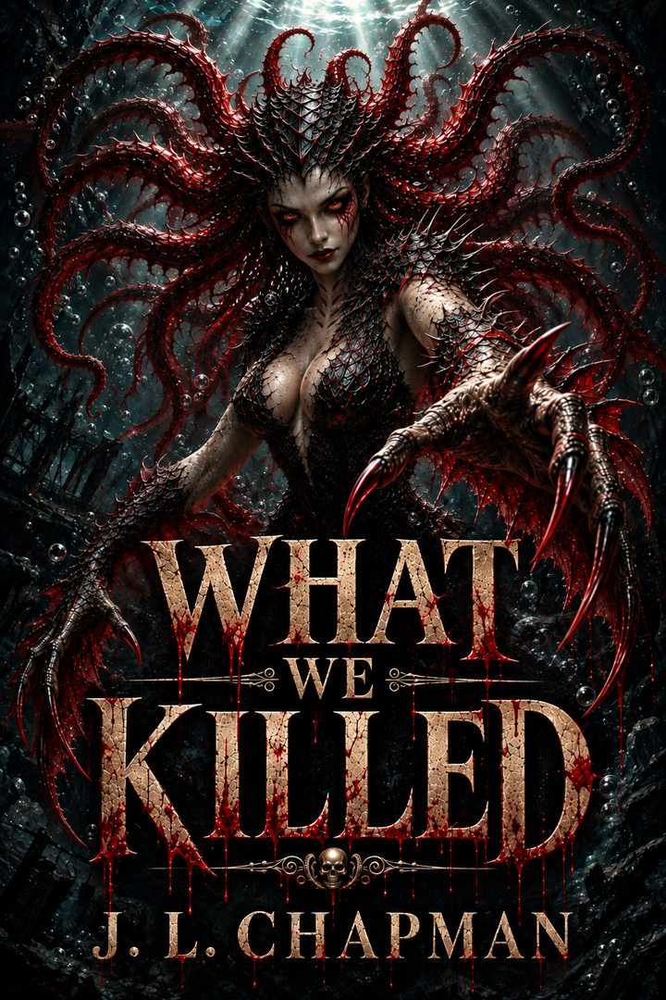
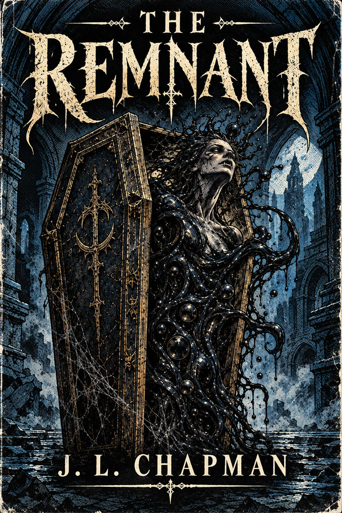
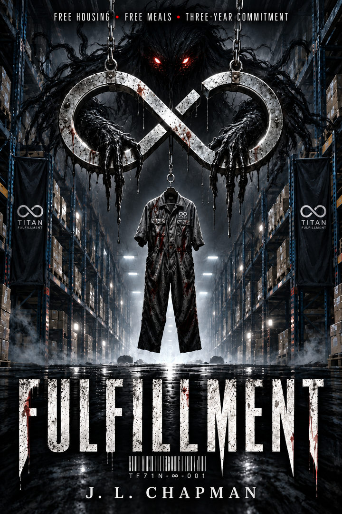

Available Now
The Last Laugh
A comedy festival at an old haunted theater turns into a night of secrets, shame, and judgment as something in the dark begins peeling people open.
Buy on AmazonDark Psychological Horror
J.L. Chapman writes horror soaked in dread, regret, supernatural terror, and the ugly truths people try to bury until the dark starts digging.
Books
Three stories. One theater. The trilogy is complete.

Available Now
A comedy festival at an old haunted theater turns into a night of secrets, shame, and judgment as something in the dark begins peeling people open.
Buy on Amazon
Available Now
A gaming livestream crew enters Dead Man Theater chasing content, attention, and fame. The theater has other plans, and the audience may be part of the trap.
Buy on Amazon
Available Now · Book Three
The Dead Man Theater's horrors have escaped the stage. A journalist follows a trail of murders, sinister masks, and an audience whose past choices refuse to stay buried.
Buy on AmazonAbout the Author
J.L. Chapman writes horror and psychological thrillers set in real-world places, filled with real people making one wrong turn, then another, until the story stops asking what is scary and starts asking what someone is willing to do.
Chapman’s background includes time as a correctional officer and work in the pharmacy field, places where you learn how fast a person can break and how cleanly a lie can be told. The fiction pulls from that: pressure that keeps tightening, fear that stays quiet, and consequences that do not negotiate.
When Chapman is not writing, carpentry and furniture restoration keep the hands busy, taking apart things that look fine until you get close enough to see what time did to them. Same instinct on the page. Strip it down. Find the decay. Put it back together with the cracks still showing.
These are stories where the exit sign flickers, the room gets smaller, and the ending does not care what anyone meant to do.
Signature Ingredients
Works in Progress
New worlds, new monsters, and a few things that should have stayed buried. These books are in development. Cover artwork and details may change before publication.

In Development
Beneath the surface, a colony's fragile order faces something it was never built to survive.

In Development
A dark new horror story where secrets take root and something terrible is waiting to be uncovered.

In Development
When Caleb's brother disappears, his search leads him into a world hidden beneath the ocean, where the creatures behind humanity's oldest mermaid legends are terrifyingly real. But the deeper he searches, the more he realizes these creatures have kept their existence secret for a reason. And Caleb may be the next secret they bury.

In Development
Something ancient is stirring where the dead were meant to remain. A new nightmare is taking shape.

Completed Manuscript
Seeking Literary Representation
Free housing. Free meals. Three-year commitment.
At Titan Fulfillment, the night shift comes with rules. Stay in the lit aisles. Never answer a voice calling from the dark. And when a coworker disappears, don't ask questions.
Every legend in America came from somewhere. Titan keeps them fed.
A completed horror manuscript currently seeking literary representation. Publication details have not been announced.
Contact
Follow J.L. Chapman for book updates, release news, horror projects, and whatever crawls out next.